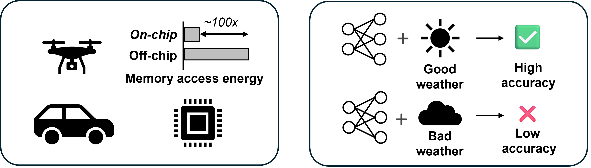

Motivation

Deploying VIO networks on mobile autonomous platforms poses a significant challenge due to the limited
memory and
computing capacity of such devices.
More importantly, accessing off-chip DRAM memory requires two to three orders of magnitude more power
compared to on-chip memory access, thereby imposing a significant limitation on the size of the networks
that can be deployed on these platforms.
Yet another concern for mobile VIO platforms is that they may suffer from post-deployment performance
degradation when
encountering out-of-distribution (OoD) data at test time.
For example, a network trained on clean camera image sequences might be prone to failure when the image
distribution
shifts due to environmental conditions, e.g., shadow, snow, and rain.
Model Compression
We target sub-million parameter count for the model to be accommodated in the on-chip memory of a mobile
platform.
Commercial mobile processors like Apple A16 and Qualcomm Snapdragon only possess a few MB of on-chip
memory.
We reduce the size of the visual encoder while maintaining the BatchNorm (BN) parameter size for test-time
adaptation
since tuning
BN is a preferred method for adaptation.
We summarize our approach and its effects in the following:
Model Compression - Results
Our compressed result gives $36.45 \times$ lower model size than that of the target state-of-the-art baseline, NASVIO, while having a minute increase in relative translation/rotation errors $\{ t_{rel}, r_{rel} \} = \{ 1.11\%, 1.05^{\circ} \}$ against the art. For similarly-sized NASVIO maintaining the architecture, we achieve translation/rotation error reduction of $\{ 3.80\%, 1.94^{\circ} \}$.
Trajectory Results
Our network performs comparably to others on Seq. $07$ and outperforms others on Seq. $10$.
Multi-modal Consistency-based TTA
Dictionary-based Visual Encoder Adaptation
Only the weights of the visual encoder are modified during adaptation while the weights of other modules are fixed. As shown here, domain distinctive features from the early layers of the visual encoder are utilized for domain shift detection. The visual encoder hosts an auxiliary dictionary to store and update learnable BN parameters corresponding to different noise types.
Motivation for Multi-modal Consistency

Although the inertial-inferred pose estimates exhibit sub-par performance compared to that of vision, it is unaffected by the weather conditions. When we simulate adversarial weather conditions on KITTI-C, we observe that the fused-feature-based poses become much more erroneous than the inertial-referred poses. This demonstrates a strong correlation ($r = 0.86$) between the inertial-inferred output and the ground truth.
Comparison Against Fine-tuned Baselines
We demonstrate the effectiveness of our TTA method by comparing it with networks fine-tuned with adversarial noises. Except for one case, e.g., multiplicative noise, our TTA method has the best or second-best accuracy. This case assumes stationary domain shift. Here, we fine-tuned the baseline model, trained initially on the noise-free source domain, by introducing the corresponding visual corruption.
Continual TTA
We report VIO results for dynamically corrupted vision inputs on KITTI Seq. $07$ with and without TTA. The sequence starts with clean images until $t_0 = 22$s. After $t_0$, the system instead receives blurred images, which continues until $t_1 = 88$s. Then, the distribution shift is removed, and the image input returns to the uncorrupted source domain. Such a domain shift results in a pose-wise $t_{rmse}$ increase from $0.022$ m to $0.133$ m. TTA reduces the error by $29.7 \%$ to $0.093$ m.
Continual TTA w/ Dynamic Noise Shifts
We perform vision corruptions to KITTI and EuRoC datasets with methods from ImageNet-C. With continual TTA on KITTI, our UL-VIO achieves $18\%$ reduction in pose-wise $t_{rmse}$ on average. The domain-discriminative TTA governs $K$ sets of lightweight BN parameters adequately switched based on domain matching with high $ddf$ acc. of $99.6\%$.
BibTeX
@inproceedings{park2024ulvio,
title={UL-VIO: Ultra-lightweight Visual-Inertial Odometry with Noise Robust Test-time Adaptation},
author={Park, Jinho and Chun, Se Young and Seok, Mingoo},
booktitle={European Conference on Computer Vision},
year={2024},
organization={Springer}
}